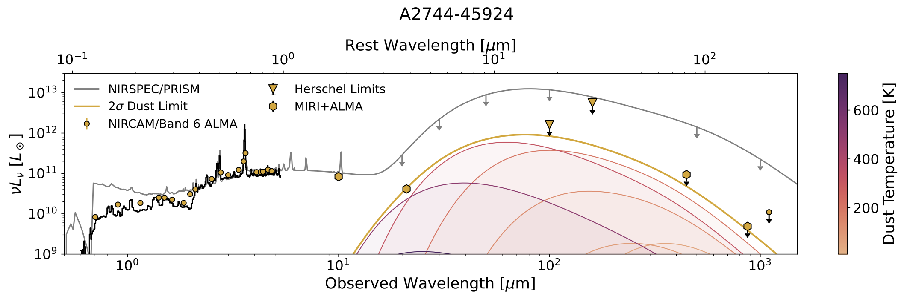

About Me

I am a Brinson Prize Fellow at the Princeton University Department of Astrophysical Sciences studying massive galaxies as a part of the SQuIGGLE, RUBIES, and UNCOVER surveys. My research focuses on understanding the physical mechanism that drives the shutdown of star formation in massive galaxies by placing constraints on the star formation histories, structures, and number densities of recently quenched systems. I am also very interested in Little Red Dots and understanding their strange "V"-shaped spectral energy distributon. When I'm not doing science, I am usually watching movies, playing guitar for my band, or watching football.
Education:
May 2019-July 2023: Ph.D Candidate in Physics, University of Pittsburgh
Aug. 2017-May 2019: M.S. in Physics, University of Pittsburgh
Aug. 2013-May 2017: B.S. in Physics and Astronomy, University of Arizona
Publications: ADS
Research

Post-starburst galaxies in the wake of cosmic noon: what drives rapid quenching?
As a part of the SQuIGGLE Survey, I am working to conduct population level-studiies of post-starburst galaxies selected from the SDSS and DESI spectrosopic samples. Using novel SED fitting techniques, we have quantified the star formation histories of these samples, and have studied their structures and gas contents as they relate to their recent star formation. Lately, I have been working on a large CO(2-1) study of these systems using data obtained in my ALMA programs to understand why SQuIGGLE post-starbursts exhibit a diversity in CO-luminosity. I am also excited about my upcoming ALMA/JWST joint program that will obtain high resolution CO(2-1) and Pa-Alpha maps of the most CO-luminous galaxies in our sample.
Relevant publications:
DESI Survey Validation Spectra Reveal an Increasing Fraction of Recently Quenched Galaxies at z~1 (Setton+2023)
The Compact Structures of Massive z~0.7 Post-starburst Galaxies in the SQuIGGLE Sample (Setton+2022)
SQuIGGLE Survey: Massive z~0.6 Post-starburst Galaxies Exhibit Flat Age Gradients (Setton+2020)
SQuIGGLE Survey Website

Understanding the mysterious "V-shaped" SED of Little Red Dots
As a part of the RUBIES and UNCOVER surveys, I am working to understand what is producing the continuum shape and line emission in Little Red Dots. Using the full sample of PRISM spectra in the Dawn JWST Archive, I selected all extremely red Halpha emitters and found that the turnover in the LRD spectra ubiquitously occurs at 3645 A, the wavelength associated with n=2 Balmer absorption/emission. I also used deep JWST/MIRI and ALMA imaging to place the deepest constraints on the LRD IR luminosity to date, showing that models that invoke significant reddening of an intrinsically blue SED are in tension with the lack of detections of dust continuum at any temperature.
Relevant publications:
A confirmed deficit of hot and cold dust emission in the most luminous Little Red Dots (Setton+2025)
Little Red Dots at an Inflection Point: Ubiquitous "V-Shaped" Turnover Consistently Occurs at the Balmer Limit (Setton+2024)
UNCOVER: 404 Error -- Models Not Found for the Triply Imaged Little Red Dot A2744-QSO1 (Ma, Greene, Setton+2024)
The star formation histories and structures of the first massive, passive galaxies with JWST
Also with RUBIES and UNCOVER, I am working to study the star formation histories of the first galaxies in the universe that exhibit strong Balmer breaks. We have discovered extremely intersting systems at early cosmic times that in many ways defy predictions, including a logM~11 quenched galaxy at z=5, a passive logM~10.3 galaxy at z=7, and a massive dusty galaxy with very low equivalent width Halpha and a star foramtion history that implies very early formation at z~4. I am also working with students at Princeton and Pitt to study the spatially resolved structures, star formation histories, and rates of AGN incidence in large samples of systems at and above z=2.
Relevant publications:
Efficient formation of a massive quiescent galaxy at redshift 4.9 (de Graaff, Setton+2024)
RUBIES Reveals a Massive Quiescent Galaxy at z=7.3 (Weibel, de Graaff, Setton+2024)
UNCOVER NIRSpec/PRISM Spectroscopy Unveils Evidence of Early Core Formation in a Massive, Centrally Dusty Quiescent Galaxy at z = 3.97 (Setton+2024)
Teaching/Outreach
Teaching:
Spring 2018
Teaching Assistant, ASTRON 0089 Stars, Galaxies, and Cosmos
Received Myron P. Garfunkel Excellence in Graduate Student Teaching Award
Fall 2017
Teaching Assistant, ASTRON 0088 Stonehenge to Hubble
Teaching Assistant, ASTRON 0077 Basics of Spaceflight
Outreach:
Speaker at a number of retirement homes (highly recommend--the most friendly audience you will ever get as an astronomer!)
Astronomy on Tap Pittsburgh Speaker
"The Puzzling Counter Intuitiveness of Special Relativity"
Volunteer Tutor at Taylor Alderdice High School
Contact
Email:
davidsetton@princeton.edu
Address:
4 Ivy Lane
Office 215
Princeton, NJ 08540